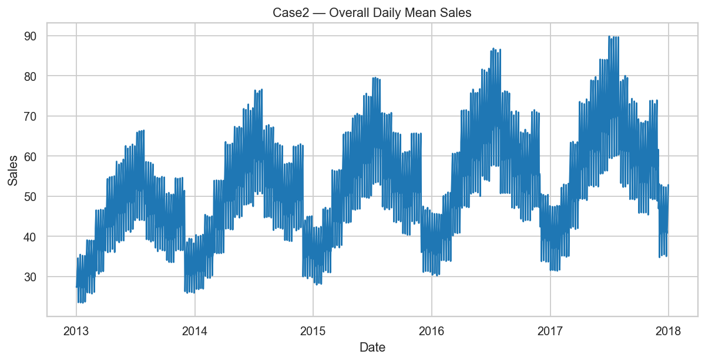
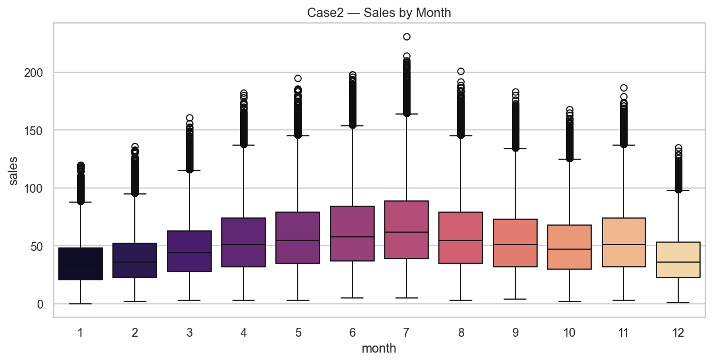
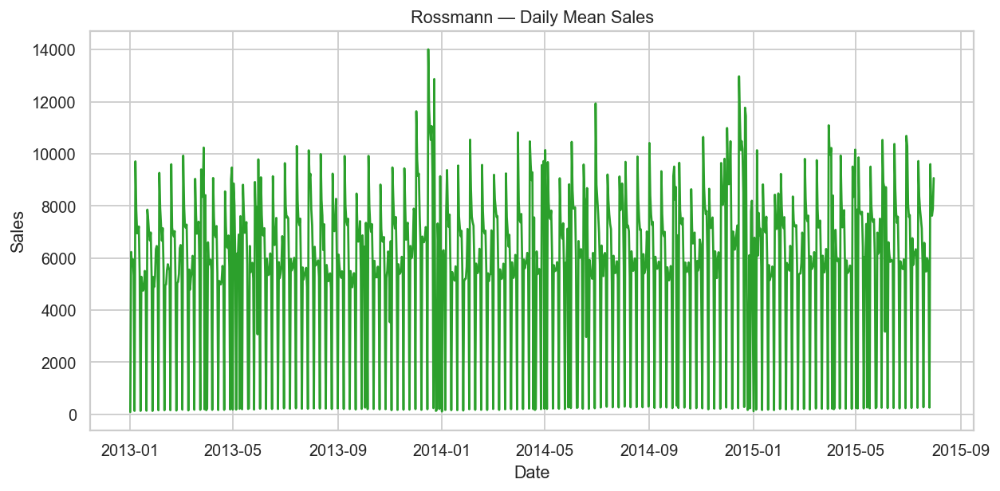
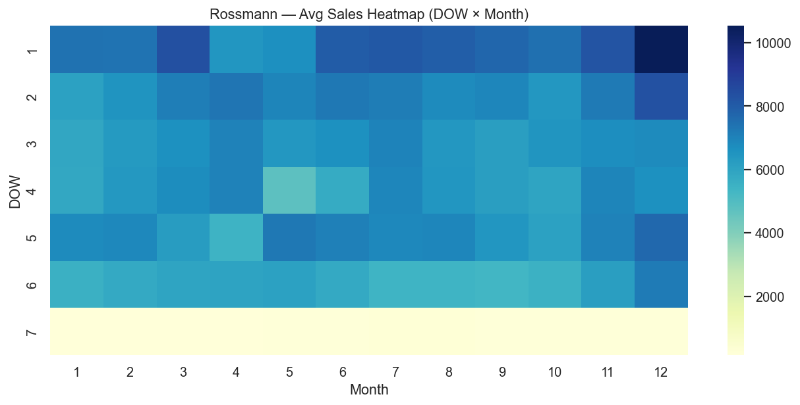
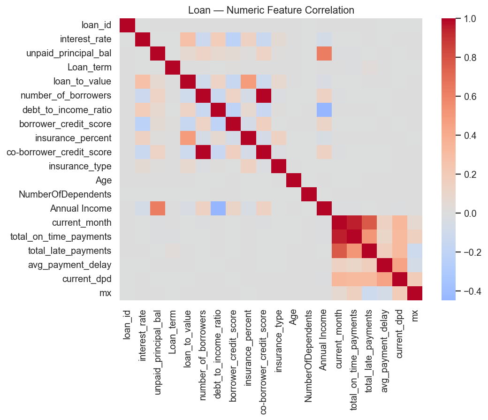

This repository bundles three independent Flask applications behind a single, branded dashboard. The dashboard starts each app on its own port and embeds it so you can operate everything from one place.
dashboard/Case2-Nosalesuplift(pipeline) 2/loan_app/Sales Uplift 2/pipeline/All apps now share a consistent “Samsung Worklet 8” modern UI.
lsofRecommended: Use a dedicated virtual environment in the repo root.
Create and activate a venv in the repo root:
cd "/Users/ayush/Downloads/Samsung Dashboard worklet 8"
python3 -m venv .venv
source .venv/bin/activateUpgrade pip and install core dependencies used across apps:
pip install --upgrade pip
pip install flask pandas numpy scikit-learn joblib xgboost lightgbm catboostNote on Apple Silicon (M1/M2/M3): LightGBM/CatBoost wheels are installed above. If compilation issues appear, reinstall with matching wheels or consult their docs.
You can run everything via the dashboard or run apps individually.
cd dashboard
python app.pyOpen: http://127.0.0.1:5050
dashboard/logs/<app>.log.flask run --no-reload on these
ports:
If a button fails, the dashboard shows the last lines from the corresponding log file to help debug quickly.
Case2 Sales Prediction:
cd "Case2-Nosalesuplift(pipeline) 2"
FLASK_APP=app.py python -m flask run --host 127.0.0.1 --port 7001 --no-reloadLoan Default Predictor:
cd loan_app
FLASK_APP=app.py python -m flask run --host 127.0.0.1 --port 7002 --no-reloadRossmann Sales Uplift:
cd "Sales Uplift 2/pipeline"
FLASK_APP=app.py python -m flask run --host 127.0.0.1 --port 7003 --no-reloadEach app expects specific artifacts and/or data files. Place them in the listed folders before running.
Case2-Nosalesuplift(pipeline) 2/Purpose: Predict daily sales for a given store+item (single form) and batch CSV upload.
Present artifacts in repo (already included): -
scaler.pkl — StandardScaler used to normalize features -
catboost_model.pkl — CatBoost regressor -
lgbm_model.pkl — LightGBM regressor -
ridge_model.pkl — Ridge regressor - Data files:
train2.csv (for dropdowns), test.csv
(sample)
Model selection: UI lets you choose among any loaded models. If doing
batch predictions, code prefers random_forest if present,
else the first loaded model (with current artifacts that will be one of
the above).
Features (single prediction): - Inputs captured: store,
item, month, day - Derived at
runtime: dayofweek, dayofyear,
weekofyear - All features are scaled by
scaler.pkl before inference.
Batch prediction (CSV): - Input CSV must include date,
store, item - The app derives
month, day, dayofweek,
dayofyear, weekofyear - Output CSV adds
predicted_sales (rounded int)
Endpoints: - GET / — Form + batch UI -
POST /predict — Single prediction -
POST /batch_predict — CSV upload, returns JSON with
download_url - GET /download/<filename>
— Download processed CSV
loan_app/Purpose: Classify a loan as Default vs Non-Default from form inputs.
Expected artifacts (user-provided, not committed): -
loan_app/models/tabpfn.pkl — Trained classifier (loaded
with joblib) - loan_app/models/scaler.pkl — Fitted scaler
for numeric features - loan_app/models/dummy_columns.pkl —
List of training one-hot columns for alignment
Important: Ensure that the library used to create
tabpfn.pkl is installed if its class needs to be unpickled
(e.g., TabPFN). In many cases, plain scikit-learn-compatible wrappers
work with the stack installed above.
Inputs (examples, must match training): - Numeric:
interest_rate, … - Categorical: source,
loan_purpose, EducationLevel,
MaritalStatus, Gender,
EmploymentStatus
Preprocessing: - One-hot encode categorical columns, then align to
dummy_columns.pkl - Scale numeric columns via
scaler.pkl
Endpoint: - GET / — Applicant form -
POST /predict — Returns JSON:
{ "prediction": 0|1, "class": "Default"|"Non-Default" }
Sales Uplift 2/pipeline/Purpose: Batch predictions for Rossmann stores using a trained XGBoost model.
Artifacts in repo (already included): - xgb_model.pkl —
Trained regressor - scaler.pkl — Scaler fitted on training
features - encoder.pkl — OneHotEncoder for categorical
features (if present); otherwise a safe dummy encoder is created
Key processing (from utils/data_processor.py): - Type
conversions (Date → datetime, encode StateHoliday) - Feature
engineering: WeekOfYear, Month,
Year, CompetitionOpenNumMonths,
Promo2NumWeeks - Transformations: sqrt on
Sales, Customers,
CompetitionOpenNumMonths, Promo2NumWeeks; log
on CompetitionDistance - One-hot encoding for
PromoInterval, StoreType,
Assortment (encoder if available; else pandas dummies) -
Dummy trap avoidance by dropping a fixed set of columns - Feature order
enforced to match scaler’s feature_names_in_ (or a
configured list)
Inputs (CSV): - A test dataset with standard Rossmann features (no Sales column required)
Outputs: - JSON: { success, row_count, download_url } -
CSV: Original columns + Predicted_Sales
Endpoints: - GET / — CSV upload UI -
POST /predict — CSV upload, returns JSON -
GET /download/<filename> — Download processed CSV
Case2 — single prediction (form post):
curl -X POST http://127.0.0.1:7001/predict \
-H 'Content-Type: application/x-www-form-urlencoded' \
--data-urlencode 'store=1' \
--data-urlencode 'item=1' \
--data-urlencode 'month=1' \
--data-urlencode 'day=15' \
--data-urlencode 'model_choice=catboost'Case2 — batch prediction:
curl -X POST http://127.0.0.1:7001/batch_predict \
-F file=@test.csvLoan — predict:
curl -X POST http://127.0.0.1:7002/predict \
-H 'Content-Type: application/x-www-form-urlencoded' \
--data-urlencode 'interest_rate=9.5' \
--data-urlencode "EducationLevel=Bachelor's" \
--data-urlencode 'source=Online' \
--data-urlencode 'loan_purpose=Personal' \
--data-urlencode 'MaritalStatus=Single' \
--data-urlencode 'Gender=Male' \
--data-urlencode 'EmploymentStatus=Employed'Rossmann — batch prediction:
curl -X POST http://127.0.0.1:7003/predict \
-F file=@"Sales Uplift 2/Dataset/test.csv"APPS in
dashboard/app.py.dashboard/logs/*.log after attempting
to start an app.uploads/ folder.<style> blocks.Process died / Bad file descriptor: The dashboard now strips
WERKZEUG_* env and uses --no-reload to avoid
FD issues.
scikit-learn unpickle warnings: Align versions or re-export models. Example to downgrade:
pip install 'scikit-learn==1.6.1'Port in use: Free ports with:
lsof -ti:5050,7001,7002,7003 | xargs kill -9Missing loan artifacts: Place tabpfn.pkl,
scaler.pkl, dummy_columns.pkl under
loan_app/models/.
See docs/troubleshooting.md for detailed guidance.
Samsung Dashboard Worklet 8
├── dashboard/ # Unified control plane (Flask)
│ ├── app.py # Spawns child apps, serves UI, logs
│ ├── logs/ # Per-app logs
│ └── templates/ # Dashboard views
├── Case2-Nosalesuplift(pipeline) 2/
│ ├── app.py # Single & batch sales prediction
│ ├── templates/index.html # UI (form + batch)
│ ├── *.pkl # scaler + models (ridge, lgbm, catboost)
│ └── uploads/ # Batch outputs
├── loan_app/
│ ├── app.py # Loan default predictor
│ ├── templates/index.html # UI (form)
│ └── models/ # EXPECTED: tabpfn.pkl, scaler.pkl, dummy_columns.pkl
└── Sales Uplift 2/pipeline/
├── app.py # Rossmann batch app
├── config.py # Paths, expected features, upload folder
├── utils/ # Model loader, data processing, file IO
├── templates/index.html # UI (uploader)
└── uploads/ # OutputsThis project consolidates three independent ML use cases behind one dashboard: - No sales prediction (per store–item daily sales; form + batch CSV) - Loan predictor (delinquency/default classification from applicant features) - Sales prediction (Rossmann-style retail batch forecasting)
Each use case is a separate Flask app with its own data schema, preprocessing, and model artifacts. The dashboard starts, health-checks, and embeds each app, providing a simple operator interface suitable for demos, reviews, and handover.
Business outcomes: - Credit risk reduction via early identification of high-risk applicants - Inventory and operations planning via daily sales estimates - Campaign and planning support via store-level retail predictions
Samsung PRISM is a student–industry collaboration program. This worklet follows common data science report conventions for evaluation: - Clear problem statements and data schemas - Reproducible modeling approach and evaluation protocol - Practical deployment interface (web UI) for reviewers
Architecture: - Three Flask services (one per use case), each loading CSV-based input, applying deterministic preprocessing, running inference with persisted artifacts, and serving a small web UI plus HTTP endpoints - A unified Flask dashboard that spawns the services on fixed ports, verifies readiness, and embeds each app in an iframe with log-tail diagnostics on failure
Ports (default): - Dashboard: 5050 - No sales prediction: 7001 - Loan predictor: 7002 - Sales prediction: 7003
date, store,
item (date features are derived)/, POST /predict,
POST /batch_predict,
GET /download/<file>dummy_columns.pkl, scale numeric featurestabpfn.pkl (classifier),
scaler.pkl, dummy_columns.pkl/, POST /predictxgb_model.pkl, scaler.pkl,
encoder.pkl/, POST /predict,
GET /download/<file>GET / — List apps, status, and Open buttonsGET /open/<app_id> — Launch app on demand and
embed itPOST /api/start/<app_id> — Programmatic
startPOST /api/stop/<app_id> — Programmatic stopApp IDs: case2 (No sales prediction), loan
(Loan predictor), rossmann (Sales prediction)
GET / — HTML (form + batch)POST /predict — Single prediction (form fields: store,
item, month, day, model_choice)POST /batch_predict — Multipart CSV (file)GET /download/<filename> — CSV downloadGET / — FormPOST /predict — x-www-form-urlencoded; returns JSON
{ prediction, class }GET / — UploaderPOST /predict — Multipart CSV (file); returns
{ success, row_count, download_url }GET /download/<filename> — CSV downloadQuality controls: - De-duplication by keys (e.g., (store, item, date) or applicant ID) - Missing value policy consistent between train and inference - Outlier treatment (clipping/winsorization, log transforms) - Encoding strategies documented for categorical fields - Consistent splits with seeded randomness
Dataset documentation (per CSV): - Column name, type, allowed ranges, missingness, meaning, label definition, and leakage prevention notes
Reproducibility: - Pin Python and package versions - Persist random
seeds and training configs - Store scalers/encoders with models; enforce
feature order (e.g., scaler.feature_names_in_)
Tech stack: - Python 3.x, Flask for all apps - ML: scikit-learn, XGBoost, LightGBM, CatBoost - Data: pandas, numpy - Dashboard alternatives: Streamlit/Dash/Taipy (optional future migration)
Run locally (recommended):
cd "/Users/ayush/Downloads/Samsung Dashboard worklet 8"
python3 -m venv .venv && source .venv/bin/activate
pip install --upgrade pip && pip install flask pandas numpy scikit-learn joblib xgboost lightgbm catboost
cd dashboard && python app.pyOpen http://127.0.0.1:5050 and click to open each app.
Include screenshots of each app view and an example CSV-to-prediction flow for reviewers.
dashboard/logs/<app>.log
and free ports:
lsof -ti:5050,7001,7002,7003 | xargs kill -9tabpfn.pkl,
scaler.pkl, dummy_columns.pkl under
loan_app/models/
How it runs (UI and API): - Open Dashboard → click “No sales prediction” → form page loads - Fill store, item, date → click Predict → server derives date features, scales, selects model → returns prediction - For batch: upload CSV with date, store, item → receive download link
Mermaid sequence (form flow):
sequenceDiagram
autonumber
participant U as User
participant D as Dashboard (iframe)
participant C as Case2 Flask
U->>D: Open No sales prediction
D->>C: GET /
C-->>D: HTML (form)
U->>C: POST /predict (store,item,month,day,model)
C->>C: Derive features + scale + predict
C-->>U: HTML with Predicted SalesSample prediction (single):
Predicted Sales with Catboost: 184Sample JSON (batch):
{
"success": true,
"download_url": "/download/predictions_test.csv",
"records_processed": 1000
}Tips: - Ensure scaler.pkl and at least one model .pkl exist in the Case2 folder - The dropdown list is populated from train2.csv (store/item values)
How it runs: - Open Dashboard → click “Loan predictor” → applicant form - Submit → server one-hot encodes categoricals, aligns to dummy_columns.pkl, scales numerics, predicts class
Mermaid sequence:
sequenceDiagram
autonumber
participant U as User
participant D as Dashboard (iframe)
participant L as Loan Flask
U->>D: Open Loan predictor
D->>L: GET /
L-->>D: HTML (form)
U->>L: POST /predict (form-encoded)
L->>L: Preprocess (dummies + scaler) + predict
L-->>U: JSON { prediction, class }Sample JSON:
{ "prediction": 1, "class": "Default" }Tips: - Place tabpfn.pkl, scaler.pkl, dummy_columns.pkl into loan_app/models/ - Column names in the form must match training-time schema for proper alignment
How it runs: - Open Dashboard → click “Sales prediction” → CSV uploader - Upload Rossmann-style feature CSV → pipeline processes features, scales, predicts → download link returned
Mermaid sequence:
sequenceDiagram
autonumber
participant U as User
participant D as Dashboard (iframe)
participant R as Rossmann Flask
U->>D: Open Sales prediction
D->>R: GET /
R-->>D: HTML (uploader)
U->>R: POST /predict (file)
R->>R: DataProcessor (features→scale→predict)
R-->>U: JSON { success, row_count, download_url }Sample JSON:
{ "success": true, "row_count": 42157, "download_url": "/download/predictions_test.csv" }Tips: - encoder.pkl is optional; a safe OneHotEncoder fallback is created if missing - scaler.feature_names_in_ is used to enforce feature order; otherwise Config.EXPECTED_FEATURES
flowchart LR
subgraph Dashboard[Unified Dashboard (Flask)]
A[Buttons: No sales | Loan | Sales] -->|spawn + health check| P1
end
subgraph Case2[No sales prediction]
P1[flask run 7001] --> F1[Form + Batch]
F1 --> M1[Scaler + Ridge/LGBM/CatBoost]
end
subgraph Loan[Loan predictor]
P2[flask run 7002] --> F2[Applicant Form]
F2 --> M2[Dummy Align + Scaler + Classifier]
end
subgraph Rossmann[Sales prediction]
P3[flask run 7003] --> F3[CSV Upload]
F3 --> M3[DataProcessor + Scaler + XGBoost]
end
A -. iframe .-> F1
A -. iframe .-> F2
A -. iframe .-> F3docs/assets/dashboard.png (placeholder)docs/assets/no_sales_form.png
(placeholder)docs/assets/no_sales_batch.png (placeholder)docs/assets/loan_form.png
(placeholder)Real charts generated from your data:
 



pie title Loan Predictor — Class Distribution (Sample)
"Non-Default" : 78
"Default" : 22pie title No Sales — Error Bucket (% of rows)
"|err| < 10" : 45
"10–50" : 35
">= 50" : 20Store 1, Item 1, 2024-01-15 → 184
Store 12, Item 3, 2024-02-02 → 97
Store 5, Item 8, 2024-07-21 → 236{ "prediction": 0, "class": "Non-Default" }
{ "prediction": 1, "class": "Default" }...,Store,Date,DayOfWeek,Open,Promo,...,Predicted_Sales
...,1,2015-08-01,6,1,1,...,4570
...,1,2015-08-02,7,0,1,...,0docs/assets/demo.gif).lsof -ti:5050,7001,7002,7003 | xargs kill -9.Samsung PRISM — Unified Python Dashboard • © 2025